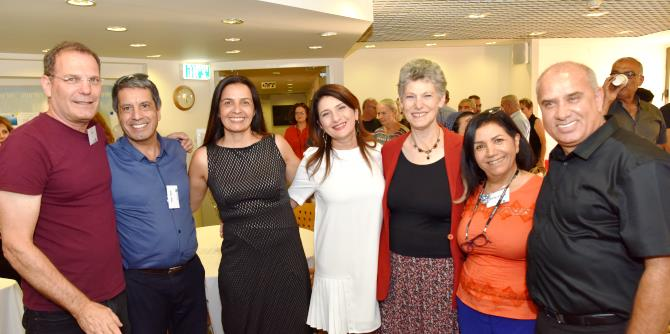

Dr. Granit Almog-Bareket, a graduate of Cohort 14 of the Mandel School for Educational Leadership, joined the leadership of the Mandel Graduate Unit upon completion of her studies at the Mandel School and was a member of the Unit’s founding team, which developed its unique model.
The underlying principle of the Mandel Graduate Unit's work is that a leader's growth and development is a continuing process, and that real leadership depends not only on developing new capabilities, but also on maintaining and deepening existing skills and remaining in constant and critical dialogue with reality.
Granit worked tirelessly to create unique programs tailored to the diverse and changing professional needs of Mandel graduates, while focusing on professional identity and on formulating and developing the vision of the graduates. Her research articles, which present unique perspectives on dimensions of leadership and management, have been published in academic journals and presented at major conferences.
Following Granit's decision to pursue new professional goals, a farewell event was held in her honor. The event was attended by dozens of graduates, the senior management and employees of the Mandel Foundation–Israel, members of Granit’s family, and her colleagues.

Moshe Vigdor, director general of the Mandel Foundation–Israel, thanked Granit for her work and accomplishments and for her contribution to the activities of the Foundation and the professional development of Mandel graduates.
Danny Bar Giora, director of the Mandel School for Educational Leadership and a graduate of Cohort 4, spoke about his experiences of Granit, his longtime colleague.
Several other Mandel graduates also spoke at the event:
- Professor Lia Laor, graduate of Cohort 3 and dean of the faculty of education at Levinsky College of Education
- Mordechai Cohen, graduate of Cohort 8 and director general of the Ministry of the Interior
- Karen Tal, graduate of Cohort 11 and founder and CEO of Insights in Education
- Eitan Moran, graduate of Cohort 15 and CEO of the Society for the Advancement of Education
- Zehava Shemesh, graduate of Cohort 4 and director of the planning and development division at the Ministry of Education.
Granit closed the evening with a speech in which she thanked the graduates: “I thank you for choosing to enact, on a daily basis, the moral contract you have taken upon yourselves, even after years have passed… ,for daring every day to dream and to realize those dreams…, and for seeing me and us as partners in your journey. This is a partnership that can never be taken for granted.”
{kind=link}